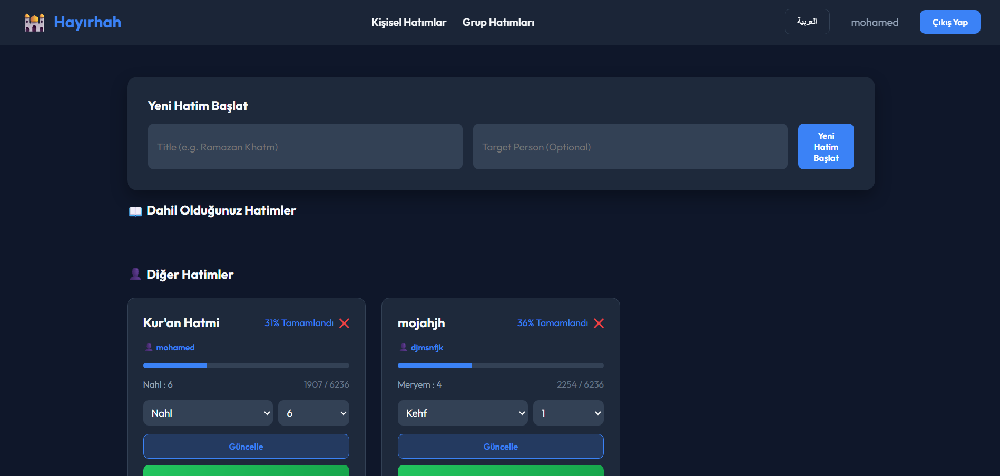
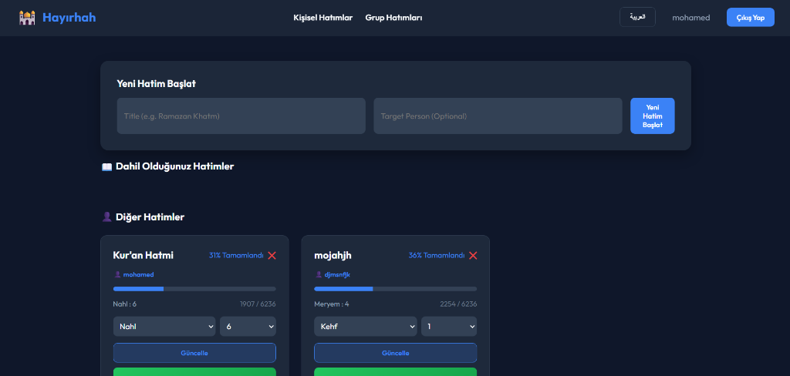
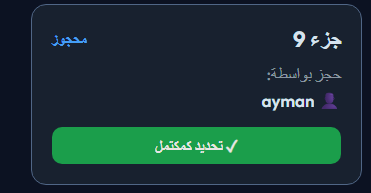

🕌
ÜNİVERSİTE PROJESİ
Bilgisayar Mühendisliği Bölümü
Web Programlama Dersi
KUR'AN KERİM HATİM TAKİP
WEB UYGULAMASI
Full-Stack Web Geliştirme Projesi
(React.js + Node.js + SQLite)
| Öğrenci Adı | Mohamed Ayman |
| Öğrenci No | MOHAMEDAYMEN12 |
| Ders Adı | Web Programlama |
| Danışman | |
| Teslim Tarihi | 7 Haziran 2026 |
Ankara, Türkiye — 2026
İçindekiler
1. Proje Özeti ve Amacı3
2. Proje Hedefleri ve Gereksinimler3
3. Geliştirme Zaman Çizelgesi (Timeline)4
4. Kullanılan Teknolojiler5
5. Sistem Mimarisi6
6. Veritabanı Tasarımı7
7. Backend Geliştirme (Node.js & Express)8
8. Frontend Geliştirme (React.js)9
9. Karşılaşılan Sorunlar ve Çözümleri11
10. Uygulama Ekran Görüntüleri Açıklaması12
11. Sonuç ve Değerlendirme14
12. Kaynakça15
1. Proje Özeti ve Amacı
Bu proje, Müslümanların Kur'an-ı-Kerim okuma ve hatim süreçlerini dijitalleştirmek ve kolaylaştırmak amacıyla geliştirilmiştir. Kullanıcılar sisteme üye olarak kendi bireysel hatimlerini takip edebildikleri gibi, modern bir işbirlikçi araç olan Grup Hatmi (Collective/Group Khatma) özelliğini kullanarak diğer insanlarla ortak hatimler tamamlayabilirler.
Projenin Temel Amacı: Bireysel okuma alışkanlıklarını düzenli hale getirmek, cüzlerin kimler tarafından okunduğunu şeffaf bir şekilde yönetmek ve fiziksel olarak koordine edilmesi zor olan toplu Kur'an hatimlerini tamamen web üzerinden yönetilebilir hale getirmektir. Ayrıca, kullanıcıların gizliliğini korumak adına "Grup Hatmi" katılımlarında gerçek adını gizleyerek "Hayırsever / Gizli Katılımcı" olarak cüz rezerve edebilmesini sağlar.
📌 Proje Özellikleri
- Kullanıcı kaydı ve oturum yönetimi (JWT tabanlı kimlik doğrulama)
- Bireysel hatim takibi (sure ve ayet bazlı ilerleme, 6236 ayet üzerinden)
- Grup Hatmi başlatma (Ramazan Hatmi, Aile Hatmi vb. başlıklarla)
- 30 Cüzün farklı kullanıcılar tarafından kilitlenerek rezerve edilmesi
- Gizli Katılımcı (Anonymous) modu ile kimlik korumalı cüz tamamlama
- Her katılımcı için sadece kendi rezerve ettiği cüzler üzerinden ilerleme hesabı
- Tüm cüzler bittiğinde grup hatmi durumunun otomatik "Tamamlandı" olarak güncellenmesi
- Özel Cüz Okuyucu (JuzReader) ile doğrudan hedeflenen cüze geçiş
2. Proje Hedefleri ve Gereksinimler
2.1 Fonksiyonel Gereksinimler
| No | Gereksinim | Öncelik | Durum |
| F-01 |
Kullanıcı kaydı (Ad, E-posta, Şifre) |
Yüksek |
✓ Tamamlandı |
| F-02 |
Kullanıcı girişi ve JWT token yönetimi |
Yüksek |
✓ Tamamlandı |
| F-03 |
Kişisel hatim başlatma |
Yüksek |
✓ Tamamlandı |
| F-04 |
Başkası adına hatim açma |
Orta |
✓ Tamamlandı |
| F-05 |
Sure/Ayet seçimi ile ilerleme güncelleme |
Yüksek |
✓ Tamamlandı |
| F-06 |
Bireysel Kur'an okuma sayfası |
Yüksek |
✓ Tamamlandı |
| F-07 |
Ayete tıklayarak ilerleme kaydetme |
Yüksek |
✓ Tamamlandı |
| F-08 |
Türkçe / Arapça dil değiştirme ve RTL desteği |
Orta |
✓ Tamamlandı |
| F-09 |
Grup Hatmi oluşturma ve listeleme |
Yüksek |
✓ Tamamlandı |
| F-10 |
Cüz rezervasyon kilitleme ve çakışma önleme |
Yüksek |
✓ Tamamlandı |
| F-11 |
Gizli Katılım (Anonim rezervasyon) desteği |
Orta |
✓ Tamamlandı |
| F-12 |
Cüz okuma (JuzReader) ve cüz bazlı tamamlama |
Yüksek |
✓ Tamamlandı |
2.2 Teknik Gereksinimler
- Ayrı bir frontend ve backend sunucu mimarisi (Ayrık katmanlı mimari)
- REST API ile frontend-backend iletişimi
- Güvenli şifreleme ve token tabanlı kimlik doğrulama
- Harici API entegrasyonu (Kur'an verileri için)
- Kalıcı veri depolama (veritabanı)
- Duyarlı (Responsive) tasarım
3. Geliştirme Zaman Çizelgesi (Timeline)
Projenin planlanması, veritabanının tasarlanması, kodlanması ve test edilmesine ilişkin haftalık süreç çizelgesi aşağıda belirtilmiştir:
3.1 Süreç Takvimi
| Tarih / Hafta | Yapılan Çalışmalar | Kullanılan Araçlar |
|---|
1-2. Hafta
(15 - 28 Şubat 2026) |
• Gereksinim analizi yapıldı.
• Figma üzerinde arayüz taslakları oluşturuldu.
• Proje dizini yapılandırıldı, Git başlatıldı.
|
Figma, Git, VS Code |
3-4. Hafta
(1 - 15 Mart 2026) |
• Node.js + Express sunucusu yapılandırıldı.
• SQLite veritabanı kuruldu ve users ve khatms tabloları oluşturuldu.
• bcrypt ve JWT ile kimlik doğrulama API'leri yazıldı.
|
Express, SQLite, JWT, bcrypt |
5-6. Hafta
(16 - 31 Mart 2026) |
• React.js arayüzü kuruldu, Context API ile global Auth Context yazıldı.
• react-i18next entegre edilerek Türkçe-Arapça anlık geçiş ve RTL yönlendirmeleri eklendi.
|
React, i18next, CSS |
7-8. Hafta
(1 - 19 Nisan 2026) |
• QuranReader (Kur'an Görüntüleyici) geliştirildi.
• Harici Alquran Cloud API bağlantısı sağlandı ve ayet tıklayarak durak kaydetme onay dialogu yazıldı.
• Vize Proje Raporu hazırlandı ve teslim edildi.
|
Axios, REST API, Word/HTML |
9-10. Hafta
(20 Nisan - 10 Mayıs 2026) |
• Grup Hatmi (Collective Khatma) tasarım planı çizildi.
• Veritabanı şeması genişletilerek group_khatms ve group_khatm_reservations tabloları eklendi.
• Grup oluşturma ve cüz kilitleme/rezervasyon API'leri backend tarafında geliştirildi.
|
SQLite, REST APIs, Postman |
11-12. Hafta
(11 - 25 Mayıs 2026) |
• Frontend tarafında GroupDashboard ve GroupKhatmaDetails arayüzleri tasarlandı.
• 30 Cüz için etkileşimli cüz seçim paneli ve gizli katılımcı (anonim) seçeneği yerleştirildi.
• JuzReader.jsx yazıldı; cüze özel okuma ve bismillah/sure gruplama mantığı entegre edildi.
|
React, Axios, Amiri Font |
13. Hafta (Son Aşamalar)
(26 Mayıs - 7 Haziran 2026) |
• Güvenlik güncellemesi yapıldı: Token süresi dolduğunda (401/403) otomatik güvenli çıkış (interceptor) yazıldı.
• Proje son kez test edildi ve GitHub'a yüklendi.
• Final Proje Raporu ve sunum belgelemesi tamamlandı.
|
GitHub, Git, Node.js |
4. Kullanılan Teknolojiler
4.1 Frontend Teknolojileri
| Teknoloji | Versiyon | Kullanım Amacı |
|---|
| React.js | ^19.x | Kullanıcı arayüzü bileşenleri |
| Vite | ^8.x | Hızlı geliştirme sunucusu ve paketleme |
| React Router DOM | ^7.x | Sayfa yönlendirme (SPA routing) |
| Axios | ^1.x | HTTP istekleri (API çağrıları) |
| i18next + react-i18next | ^24.x | Çok dilli destek (TR / AR) |
| Vanilla CSS | - | Özel stil tasarımı (karanlık tema) |
| Google Fonts (Amiri) | - | Arap hattı yazı tipi |
| Alquran Cloud API | v1 | Kur'an metni verisi (Osmanlı hattı) |
4.2 Backend Teknolojileri
| Teknoloji | Versiyon | Kullanım Amacı |
|---|
| Node.js | ^22.x | Sunucu taraflı JavaScript çalışma ortamı |
| Express.js | ^5.x | HTTP sunucusu ve API routing |
| SQLite3 | ^6.x | Hafif ilişkisel veritabanı |
| bcrypt | ^6.x | Güvenli şifre şifreleme (hashing) |
| jsonwebtoken (JWT) | ^9.x | Kimlik doğrulama token'ları |
| cors | ^2.x | Cross-Origin kaynak paylaşımı |
| dotenv | ^17.x | Ortam değişkenleri yönetimi |
| nodemon | ^3.x | Otomatik sunucu yeniden başlatma |
4.3 Geliştirme Araçları
| Araç | Kullanım Amacı |
|---|
| Visual Studio Code | Kod editörü |
| npm (Node Package Manager) | Paket yönetimi |
| Git | Versiyon kontrolü |
| Windows PowerShell | Terminal komutları |
5. Sistem Mimarisi
5.1 Genel Mimari
Uygulama, İstemci-Sunucu (Client-Server) mimarisi üzerine inşa edilmiştir. Frontend ve Backend birbirinden tamamen bağımsız olup aralarındaki iletişim REST API aracılığıyla gerçekleşmektedir.
🌐 Tarayıcı (React)
⇄
🔌 REST API
⇄
⚙️ Express.js
⇄
🗄️ SQLite DB
📖 AlQuran API
→
🌐 React (Kur'an Okuyucu)
5.2 Proje Dizin Yapısı
uyglama22/
├── backend/
│ ├── server.js → Ana Express sunucusu & API endpoint'leri
│ ├── db.js → SQLite bağlantısı & tablo oluşturma
│ ├── .env → Ortam değişkenleri (PORT, JWT_SECRET)
│ ├── database.sqlite → Veritabanı dosyası
│ └── package.json → Node.js bağımlılıkları
│
└── frontend/
├── src/
│ ├── App.jsx → Ana uygulama (Auth, Dashboard, GroupDashboard, GroupKhatmaDetails)
│ ├── QuranReader.jsx → Bireysel Kur'an okuyucu sayfası
│ ├── JuzReader.jsx → Grup cüz okuyucu sayfası
│ ├── surahData.js → 114 sure verisi & ayet indeks yardımcıları
│ ├── i18n.js → Türkçe/Arapça çeviri dosyası
│ ├── index.css → Global stiller (karanlık tema)
│ └── main.jsx → React giriş noktası
└── package.json → React bağımlılıkları
5.3 Kimlik Doğrulama Akışı
1. Kullanıcı Kaydı
Ad + E-posta + Şifre → bcrypt ile şifrelenir → SQLite'a kaydedilir
2. Giriş
E-posta + Şifre → bcrypt.compare → JWT token oluşturulur
3. API İstekleri
Token → Authorization header → Backend doğrular → Veri döndürür
4. Çıkış / Token Kaybı
LocalStorage temizlenir → Token silinir → Kullanıcı otomatik çıkış yapar
6. Veritabanı Tasarımı
Veritabanı olarak dosya tabanlı, hafif ilişkisel veritabanı motoru olan SQLite kullanılmıştır. Projede bireysel hatimler ve grup hatimleri için dört adet ana tablo yer almaktadır.
6.1 users Tablosu
| Sütun | Tür | Açıklama |
|---|
| id | INTEGER (PK, AUTOINCREMENT) | Benzersiz kullanıcı kimliği |
| name | TEXT NOT NULL | Kullanıcı adı |
| email | TEXT UNIQUE NOT NULL | E-posta adresi (benzersiz) |
| password | TEXT NOT NULL | bcrypt ile şifrelenmiş parola |
6.2 khatms Tablosu (Bireysel)
| Sütun | Tür | Açıklama |
|---|
| id | INTEGER (PK, AUTOINCREMENT) | Hatim kimliği |
| title | TEXT NOT NULL | Hatim başlığı (örneğin: "Kişisel Hatim") |
| owner_id | INTEGER (FK → users.id) | Hatimi oluşturan kullanıcı kimliği |
| target_person | TEXT | Hatim adanan kişi (opsiyonel) |
| last_ayah | INTEGER DEFAULT 0 | Son okunan ayetin global numarası (1-6236) |
| total_ayahs | INTEGER DEFAULT 6236 | Toplam ayet sayısı (6236) |
| type | TEXT CHECK(type IN ('self' / 'other')) | Bireysel ('self') veya Başkası Adına ('other') |
6.3 group_khatms Tablosu (Ortaklaşa)
| Sütun | Tür | Açıklama |
|---|
| id | INTEGER (PK, AUTOINCREMENT) | Grup hatim kimliği |
| title | TEXT NOT NULL | Grup hatmi başlığı (örneğin: "Ramazan Hatmi 2026") |
| creator_id | INTEGER (FK → users.id) | Grup hatmini başlatan kullanıcı kimliği |
| status | TEXT CHECK(...) | Durum: 'open' (açık), 'fully_reserved' (dolu), 'completed' (bitti) |
| created_at | DATETIME | Oluşturulma zaman damgası |
| updated_at | DATETIME | Son güncellenme zaman damgası |
6.4 group_khatm_reservations Tablosu (Cüz Rezerve)
| Sütun | Tür | Açıklama |
|---|
| id | INTEGER (PK, AUTOINCREMENT) | Rezervasyon kimliği |
| group_khatma_id | INTEGER (FK → group_khatms.id) | İlgili grup hatmi kimliği |
| juz_number | INTEGER NOT NULL | Rezerve edilen cüz numarası (1 - 30) |
| user_id | INTEGER (FK → users.id) | Rezerve eden kullanıcı kimliği |
| display_name | TEXT NOT NULL | Kullanıcı adı veya "Anonymous" (Gizli Katılımcı) |
| is_anonymous | INTEGER DEFAULT 0 | Gizli katılımcı bayrağı (0: Görünür, 1: Anonim) |
| status | TEXT CHECK(...) | Durum: 'reserved' (okunuyor), 'completed' (okundu) |
| completed_at | DATETIME | Cüzün okunduğu tarih/saat |
| created_at | DATETIME | Rezervasyon tarih/saat |
🛡️ Veritabanı Benzersizlik Kısıtı (UNIQUE Constraint)
Aynı grup hatminde aynı cüzün birden fazla kişi tarafından rezerve edilmesini (çakışmaları) önlemek amacıyla
UNIQUE (group_khatma_id, juz_number) kısıtı tanımlanmıştır. Bu kısıt, eşzamanlı isteklerde veritabanı seviyesinde veri bütünlüğünü garanti altına alır.
6.5 Bireysel Hatim İlerleme Hesaplama Mantığı
Kur'an-ı Kerim'in 114 suresinin tüm ayet sayıları surahData.js dosyasında tutulmakta; getAyahIndex() fonksiyonu ile sure/ayet ikilisi küresel ayet numarasına, getSurahFromIndex() ile de küresel numara sure/ayet ikilisine dönüştürülmektedir.
7. Backend Geliştirme (Node.js & Express.js)
7.1 API Endpoint'leri
| Method | Endpoint | Açıklama | Auth |
|---|
| POST | /api/auth/register | Yeni kullanıcı kaydı | Hayır |
| POST | /api/auth/login | Kullanıcı girişi → JWT token | Hayır |
| GET | /api/khatms | Kullanıcının tüm bireysel hatimleri | ✓ JWT |
| POST | /api/khatms | Yeni bireysel hatim oluşturma | ✓ JWT |
| PUT | /api/khatms/:id | Bireysel hatim ilerlemesini güncelleme | ✓ JWT |
| POST | /api/group-khatms | Yeni grup hatmi oluşturma | ✓ JWT |
| GET | /api/group-khatms | Tüm grup hatimlerini listeleme (ilerleme dahil) | ✓ JWT |
| GET | /api/group-khatms/:id | Grup hatmi detayları (30 cüzün durumları) | ✓ JWT |
| POST | /api/group-khatms/:id/reserve | Seçili cüzleri rezerve etme (kilitleme) | ✓ JWT |
| PUT | /api/group-khatms/:id/complete | Rezerve edilmiş cüzü okundu olarak işaretleme | ✓ JWT |
7.2 Kimlik Doğrulama Middleware (authenticate)
const authenticate = (req, res, next) => {
const token = req.headers['authorization'];
if (!token) return res.status(401).json({ error: 'Unauthorized' });
jwt.verify(token.split(' ')[1], SECRET, (err, decoded) => {
if (err) return res.status(403).json({ error: 'Forbidden' });
req.userId = decoded.id;
next();
});
};
7.3 Grup Hatmi İş Mantığı ve Rezervasyon Kontrolü
Cüz rezervasyon aşamasında, seçilen cüzlerin daha önce rezerve edilip edilmediği kontrol edilir ve başarılı bir rezervasyon sonrasında 30 cüzün tamamı dolmuşsa grup hatmi durumu otomatik olarak güncellenir:
// Cüz Rezervasyon API (POST /api/group-khatms/:id/reserve)
app.post('/api/group-khatms/:id/reserve', authenticate, (req, res) => {
const khatmaId = req.params.id;
const { juzNumbers, isAnonymous } = req.body;
// Çakışma kontrolü
const placeholders = juzNumbers.map(() => '?').join(',');
const checkSql = `SELECT juz_number FROM group_khatm_reservations
WHERE group_khatma_id = ? AND juz_number IN (${placeholders})`;
db.all(checkSql, [khatmaId, ...juzNumbers], (err, rows) => {
if (err) return res.status(500).json({ error: err.message });
if (rows.length > 0) {
const alreadyReserved = rows.map(r => r.juz_number).join(', ');
return res.status(400).json({ error: `Cüz ${alreadyReserved} zaten rezerve edilmiş.` });
}
db.get(`SELECT name FROM users WHERE id = ?`, [req.userId], (err, user) => {
const displayName = isAnonymous ? 'Anonymous' : user.name;
db.serialize(() => {
const insertSql = `INSERT INTO group_khatm_reservations
(group_khatma_id, juz_number, user_id, display_name, is_anonymous)
VALUES (?, ?, ?, ?, ?)`;
const stmt = db.prepare(insertSql);
juzNumbers.forEach(juz => {
stmt.run([khatmaId, juz, req.userId, displayName, isAnonymous ? 1 : 0]);
});
stmt.finalize(() => {
// 30 cüz doldu mu kontrolü
db.get(`SELECT COUNT(*) as count FROM group_khatm_reservations
WHERE group_khatma_id = ?`, [khatmaId], (err, row) => {
if (row && row.count === 30) {
db.run(`UPDATE group_khatms SET status = 'fully_reserved', updated_at = CURRENT_TIMESTAMP
WHERE id = ?`, [khatmaId], () => {
res.json({ message: 'Rezervasyon başarılı!' });
});
} else {
res.json({ message: 'Rezervasyon başarılı!' });
}
});
});
});
});
});
});
8. Frontend Geliştirme (React.js)
8.1 Bileşen (Component) Yapısı
| Bileşen | Dosya | Görev |
|---|
| Dashboard | App.jsx | Bireysel hatimlerin listesi ve hatim oluşturma arayüzü |
| GroupDashboard | App.jsx | Ortak hatimlerin listesi, durumu ve yeni grup hatmi oluşturma formu |
| GroupKhatmaDetails | App.jsx | 30 cüzün interaktif durum paneli, katılımcı istatistikleri ve cüz rezervasyon alanı |
| JuzReader | JuzReader.jsx | Seçili cüzün (1-30) ayetlerini harici API'den çeken ve okumayı kolaylaştıran özel arayüz |
| QuranReader | QuranReader.jsx | Bireysel hatim için sure-ayet bazlı Kur'an okuyucu ekranı |
| Navbar | App.jsx | Kullanıcı bilgisi, Çıkış Yap butonu ve TR/AR dil değiştirme menüsü |
8.2 Sayfa Yönlendirme (Routing)
| Rota (Route) | Bileşen | Açıklama |
|---|
| / | Dashboard | Bireysel hatim yönetim paneli (Giriş zorunlu) |
| /group-khatms | GroupDashboard | Grup hatimleri listesi paneli (Giriş zorunlu) |
| /group-khatms/:id | GroupKhatmaDetails | Grup hatmi detay ve cüz yönetim ekranı |
| /read/:khatmId | QuranReader | Bireysel hatim okuma ve ayet işaretleme ekranı |
| /read-juz/:juzNum | JuzReader | Grup hatminden rezerve edilen cüzü okuma ekranı |
| /login | Login | Kullanıcı giriş sayfası |
| /register | Register | Yeni kayıt sayfası |
8.3 Çok Dilli Destek (i18n)
react-i18next entegrasyonu sayesinde arayüz anında Türkçe ve Arapça dilleri arasında geçiş yapabilir. Arapça dil seçildiğinde sayfa yönü CSS üzerinden otomatik olarak sağdan sola (RTL) çevrilir ve Amiri fontu aktif edilerek Arapça Kur'an harflerinin en estetik şekilde görüntülenmesi sağlanır.
8.4 Bireysel Kur'an Okuyucu (QuranReader)
Kullanıcının nerede kaldığını takip etmesi için sure ve ayet verileri dinamik olarak yüklenir. Kullanıcı bir ayete tıkladığında onay penceresi tetiklenir ve sunucuya ilerleme kaydedilir. Okunmuş ayetler yeşil renkte vurgulanır.
8.5 Grup Hatmi ve Cüz Okuyucu (JuzReader)
Grup hatminde bir cüz rezerve eden kullanıcı, cüz detay kartında yer alan "Oku" butonuna basarak doğrudan JuzReader bileşenine yönlendirilir. Bu bileşen, Alquran Cloud API üzerinden hedeflenen cüz numarasının tüm ayetlerini tek bir istekte lazy load ederek getirir. Başlangıçta Bismillah ve sure başlıklarını görsel olarak gruplar. Okuma tamamlandığında cüz "Tamamlandı" olarak işaretlenebilir.
8.6 Axios Oturum İstek Interceptor'ı
Geliştirme aşamasında JWT token süresi dolduğunda (24 saat sonra) API isteklerinin 401/403 hatası vermesi durumunda kullanıcının tarayıcıda takılı kalmasını önlemek için Axios interceptor mekanizması kurulmuştur:
useEffect(() => {
const interceptor = axios.interceptors.response.use(
(response) => response,
(error) => {
// Token geçersiz veya süresi dolmuşsa otomatik güvenli çıkış yap
if (error.response && (error.response.status === 401 || error.response.status === 403)) {
logout();
}
return Promise.reject(error);
}
);
return () => {
axios.interceptors.response.eject(interceptor);
};
}, []);
9. Karşılaşılan Sorunlar ve Çözümleri
Sorun 1: Frontend-Backend CORS Hatası
⚠️ Sorun
React uygulaması (localhost:5173) Node.js sunucusuna (localhost:5000) istek gönderdiğinde tarayıcı CORS politikası hatası veriyordu. Tüm API çağrıları engelleniyordu.
✅ Çözüm
Backend'e cors npm paketi eklendi ve tüm kaynaklardan gelen isteklere izin verildi. Bu sayede frontend ve backend farklı portlarda çalışmasına rağmen başarıyla iletişim kurabilmektedir.
Sorun 2: SQLite Modülü Kurulum Hatası
⚠️ Sorun
Windows üzerinde sqlite3 paketi kurulurken Native C++ binding derleme hatası oluştu. node-gyp kurulum başarısız oldu.
✅ Çözüm
Node.js'in LTS (Long-Term Support) sürümü kullanıldı ve sqlite3 paketinin ön derlenmiş (prebuilt) ikili dosyaları otomatik olarak indirildi. Ek araç kurulumuna gerek kalmadı.
Sorun 3: React'te import Sırası Hatası
⚠️ Sorun
App.jsx dosyasında useNavigate hook'u dosyanın ortasında import edilmeye çalışıldığında Vite derleme (build) hatası oluştu.
✅ Çözüm
Tüm import ifadeleri dosyanın en üstüne taşındı. React kurallarına göre import'lar her zaman dosyanın başında bulunmalıdır.
Sorun 4: Giriş Başarısız - "Invalid credentials"
⚠️ Sorun
Kullanıcı giriş yapmaya çalıştığında "Invalid credentials" hatası aldı. Kullanıcılar sisteme giriş yapamıyordu çünkü henüz kayıt olmamışlardı.
✅ Çözüm
Veritabanı yeni oluşturulduğu için boştu. Kullanıcıya önce "Kayıt Ol" sayfasına gidip hesap oluşturması gerektiği açıklandı. Kullanıcı kayıt olduktan sonra giriş başarıyla gerçekleşti.
Sorun 5: Kur'an API Entegrasyonu ve Performans
⚠️ Sorun
Tüm 6236 ayetin frontend uygulamasına dahil edilmesi durumunda JavaScript bundle boyutu 5MB'ı aşacaktı. Bu durum sayfa yükleme süresini olumsuz etkileyecekti.
✅ Çözüm
Harici ve ücretsiz bir API olan Alquran Cloud (api.alquran.cloud) entegre edildi. Uygulama yalnızca kullanıcı bir sure veya cüz seçtiğinde o verileri API'den çekmektedir (lazy loading). Bu yaklaşım sayesinde ilk yükleme süresi minimum düzeyde tutulmaktadır.
Sorun 6: Grup Hatimlerinde Eşzamanlı Cüz Rezervasyon Çakışmaları
⚠️ Sorun
İki farklı kullanıcı, aynı anda aynı cüzü (örneğin 15. Cüz) rezerve etmeye çalıştığında yarış durumu (race condition) oluşuyor ve cüz her iki kullanıcı adına da rezerve edilmiş görünüyordu.
✅ Çözüm
SQLite veritabanı şemasında group_khatm_reservations tablosuna UNIQUE (group_khatma_id, juz_number) kısıtı eklendi. Ek olarak backend API tarafında rezervasyon yapılmadan önce cüzün boşta olduğu sorgulanmakta ve hata durumunda istek iptal edilerek kullanıcıya bildirim verilmektedir.
10. Uygulama Ekran Görüntüleri Açıklaması
10.1 Kullanıcı Akış Şeması
📋 Kayıt Ol
→
🔐 Giriş Yap
→
🏠 Ana Panel (Bireysel / Grup)
👥 Grup Hatmi Seç
→
🔑 Cüz Kilitle/Rezerve Et
→
📖 JuzReader Oku
→
✅ Cüzü Bitir
10.2 Ekran Görüntüleri ve Detaylı Analiz
10.2.1 Karşılama ve Oturum Açma Arayüzü
Uygulama açıldığında kullanıcıyı modern, koyu temalı (dark mode) ve cam morfolojisi (glassmorphism) efektlerine sahip şık bir giriş paneli karşılar. Aşağıdaki görsel, uygulamanın estetik tasarım dili ve arka plan görsel yerleşimini yansıtmaktadır:

Şekil 2: Karşılama ve Giriş Arayüzü Görsel Tasarımı
10.2.2 Ana Panel (Dashboard) ve Hatim Yönetimi
Kullanıcı sisteme giriş yaptığında bireysel hatimlerini yönetebildiği ve yeni hatimler oluşturabildiği ana kontrol paneline erişir. Aynı zamanda üst menüdeki sekmeler yardımıyla grup hatimlerine geçiş yapabilir. Rapor teslimi öncesinde başarıyla alınan aşağıdaki ekran görüntüsünde, aktif hatim kartları, son okunan sure/ayet bilgileri ve dinamik ilerleme çubukları görülmektedir:

Şekil 3: Kur'an Hatim Takip Sistemi - Ana Panel Arayüzü
Görsel Analiz ve Bileşen Açıklamaları:
- Navigasyon Çubuğu (Navbar): Sağ üst köşede dil değiştirme butonu (Türkçe / Arapça) ve çıkış düğmesi yer alır. Dil Arapça yapıldığında tüm arayüz sağdan sola (RTL) hizalanır.
- Bireysel Hatim Kartları: "Dahil Olduğunuz Hatimler" kısmında her hatim için ilerleme yüzdesi hesaplanır ve renklendirilir (örneğin %1.6 ve %7.9 tamamlanmış hatimler). Kart üzerinde son okunan ayet bilgisi ("Al-Baqara 100") ve doğrudan o noktadan okumaya devam etmek için "Kur'an'ı Oku" butonu yer alır.
- Hızlı Güncelleme Paneli: Kullanıcı okuma sayfasını açmadan da kart üzerindeki açılır kutulardan sure ve ayet seçerek ilerlemesini hızlıca güncelleyebilir.
- Grup Hatimleri Sekmesi: Üstteki "👥 Ortak Hatimler" linki tıklandığında, Ramazan Hatmi gibi ortak etkinliklerin olduğu, 30 cüzün kilitlenip paylaşıldığı grup paneline geçiş yapılır.
10.2.3 Ortaklaşa Hatim Takip Paneli (Group Khatma Dashboard)
Kullanıcının üst menüden "Ortak Hatimler" sekmesine tıklayarak eriştiği bu panel, işbirlikçi Kur'an hatimlerinin yönetildiği alandır. Aşağıdaki ekran görüntüsünde, yeni bir grup hatmi oluşturma formu ve mevcut hatimlerin durum kartları yer almaktadır:

Şekil 4: Ortaklaşa Hatim Paneli Arayüz Tasarımı
Arayüz Detayları:
Kullanıcılar "Hatim Başlığı" girerek saniyeler içinde yeni bir grup hatmi başlatabilirler. Liste kartları; hatmin durumunu (Açık, Dolu, Tamamlandı), toplam ilerleme yüzdesini, rezerve edilmiş ve boşta kalan cüz adetlerini şeffaf bir şekilde yansıtır. Her kartta bulunan "Hatim Detayları" butonu ile ilgili hatmin cüz yönetim ekranına geçilir.
10.2.4 Ortak Hatim Cüz Rezervasyon ve Yönetim Ekranı
Bu ekran, grup hatminin en dinamik ve işbirlikçi kısmıdır. 30 cüzün tamamı interaktif bir ızgara (grid) şeklinde listelenir. Aşağıdaki ekran görüntüsünde, cüzlerin rezervasyon durumu, katılımcılar paneli ve cüz seçim arayüzü gösterilmektedir:

Şekil 5: Grup Hatmi Cüz Dağılımı ve Yönetim Paneli
Özellik ve Fonksiyon Analizi:
- 30 Cüz Izgarası (Interactive Juz Grid): Her cüz kutusu kendi durumuna göre renk alır. Boş cüzler seçilebilir; rezerve edilmiş cüzler ise rezerve eden kişinin display_name bilgisiyle kilitlenir.
- Gizli Katılımcı (Anonymous Mode): Kullanıcı cüz seçerken "Gizli Katıl" kutusunu işaretlerse, cüz kartında adı yerine "Anonymous" yazar. Böylece hayır işlerinde gizlilik esası korunmuş olur.
- "Oku" (Read) ve "Tamamla" Butonları: Bir kullanıcı cüz rezerve ettiğinde, o cüz kartı üzerinde yeşil renkli "Oku" butonu belirir. Bu buton kullanıcıyı doğrudan
JuzReader sayfasına yönlendirir. Okuma bittiğinde ise "Tamamlandı" olarak işaretlenebilir.
- Katılımcı İlerlemeleri (Participants Sidebar): Sağ tarafta yer alan panelde, hatme katılan her kişinin cüz rezerve etme ve okuma oranları dinamik olarak hesaplanarak yüzde cinsinden listelenir.
11. Sonuç ve Değerlendirme
11.1 Proje Çıktıları ve Başarı Kriterleri
- ✅ Full-Stack Mimari: React.js frontend ve Express.js backend sunucuları sorunsuz entegre edilmiştir.
- ✅ Grup Hatmi Özelliği: 30 cüzün birden fazla kullanıcı arasında paylaşılarak okunması, anonim katılım desteğiyle başarıyla uygulanmıştır.
- ✅ Güvenli Oturum: bcrypt şifreleme ve JWT tabanlı yetkilendirme altyapısı kurulmuştur.
- ✅ Veri Tabanı Kararlılığı: SQLite UNIQUE kısıtları ile rezervasyon çakışmaları engellenmiştir.
- ✅ Kullanıcı Deneyimi: Türkçe/Arapça dil desteği, RTL düzeni ve Amiri Arapça yazı tipi ile üst düzey bir okuma deneyimi sunulmuştur.
11.2 Akademik ve Teknik Kazanımlar
Bu çalışma kapsamında, istemci ve sunucu katmanlarının bağımsız geliştirilerek REST API standartları üzerinden konuşturulması deneyimlenmiştir. SQLite gibi hafif ilişkisel veritabanlarında çoklu yazma işlemlerinde veri tutarlılığını sağlama, JWT token yönetimi ve süresi dolan oturumları Axios interceptors ile yakalayarak güvenli çıkış yaptırma gibi kritik yazılım kalıpları projede aktif olarak kullanılmıştır.
11.3 Gelecek Geliştirme Önerileri
- Kullanıcıların günlük okuma hedeflerine ulaştığında e-posta veya push bildirim alması.
- Ayetlerin Türkçe meallerinin ve tefsirlerinin Kur'an okuyucu ekranına eklenmesi.
- Sesli okuma modülü ile tanınmış hafızların cüz tilavetlerinin sisteme entegre edilmesi.
12. Kaynakça
-
React Resmi Dokümantasyonu. (2024). React – A JavaScript library for building user interfaces. Meta Open Source. https://react.dev
-
Node.js Foundation. (2024). Node.js v22 Documentation. OpenJS Foundation. https://nodejs.org/docs
-
Express.js Team. (2024). Express – Fast, unopinionated, minimalist web framework for Node.js. https://expressjs.com
-
Vite Team. (2024). Vite – Next Generation Frontend Tooling. https://vitejs.dev
-
i18next Team. (2024). i18next – Internationalization-framework written in and for JavaScript. https://www.i18next.com
-
AlQuran Cloud. (2024). AlQuran Cloud API – Open source Quran RESTful API. https://alquran.cloud/api
-
SQLite Consortium. (2024). SQLite – A C-language library that implements a small, fast, self-contained SQL database engine. https://www.sqlite.org
-
Auth0. (2024). JSON Web Tokens – Introduction to JWT. https://jwt.io/introduction
-
Google Fonts. (2024). Amiri – A Classical Arabic Typeface. https://fonts.google.com/specimen/Amiri
-
MDN Web Docs. (2024). Cross-Origin Resource Sharing (CORS). Mozilla Developer Network. https://developer.mozilla.org/en-US/docs/Web/HTTP/CORS
Bu rapor, Kur'an Hatim Takip Web Uygulaması projesinin final teknik belgelemesi amacıyla hazırlanmıştır.
Haziran 2026 — Tüm hakları saklıdır.